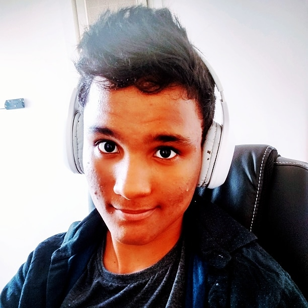

Graduando em Ciência da computação
semestre atual: 2020.1(3)
semestre atual: 2020.1(3)

Cauê Addae
casg@cin.ufpe.br
casg@cin.ufpe.br
SOBRE MIM
Oi, eu sou Cauê Addae, atualmente, curso o primeiro semestre de Ciência da computação na UFPE.Não possuo muitas conquistas, por isso decidir fazer esse site sobre algo mais pessoal.
Dentre os meus mais variados gostos, como por investigação, ciencia forensce, programação, inteligência artificial, decidi que irei tratar sobre jogos, que querendo ou não, me acompanham desde a minha infancia(me ajudaram e ajudam nas fases dificeis da vida).
Com isso, irei mostrar aqui algumas reviews que eu fiz, dos meus jogos favoritos, aqueles que oume emocionaram ou apenas me acompanham por muito tempo nessa jornada.
Estou com um pouco de vergonha alheia, mas vamos lá.
REVIEWS DOS MEUS JOGOS FAVORITOSAs imagens são links de videos

CS Para mim, O CS é o lugar confortável onde eu posso ir toda vez que me sentir triste e solitário. Para mim, O CS é a reconstrução da minha determinação. Para mim, O CS é fuga da realidade. Para mim, O CS é uma terapia. Eu não sou bom no jogo, na verdade estou muito longe de ficar razoável. Entretanto, isso tanto me anima quanto me motiva, uma vez que, sei que ele continuará sendo meu Braço Direito por uma boa parte da minha jornadaPortal é um daqueles jogos que não envelhece UM jogo onde vc está pouco se importando para a protagonista e cria um laço emocional com os antogonistas. A história é fantastica, ambientação incrivel,mecanicas unicas e a jogabelidade lisa, que a valve sabe entregar como ninguém. Multiplayer com horas de jogatina, baseada na confiaça e na amizade Puzzles simples, entretanto interessantes e inovadores.